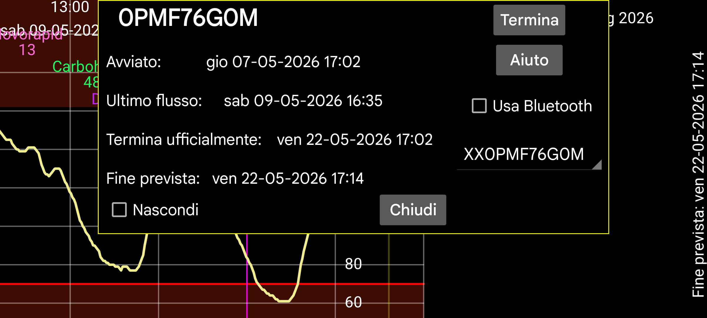

Fornisce informazioni sui sensori quando Juggluco funziona come mirror dei valori di flusso:
Avviato: orario in cui il sensore è stato avviato. Sui sensori Libre questo è un'ora prima dei primi valori del glucosio.
Ultima scansione: Ultima volta che il sensore è stato scansionato. Anche quando il sensore viene scansionato senza ricevere dati a causa di un errore del sensore o di un errore di sostituzione del sensore, questo viene contato come scansione.
Ultimo flusso: Timestamp dell'ultima misurazione del glucosio ricevuta tramite Bluetooth;
Termina ufficialmente: Orario di fine come indicato dal produttore del sensore.
Fine prevista: Alcuni sensori durano nella realtà più dell'orario di fine ufficiale. Libre 1 e 2 e Dexcom G7/ONE+ durano 12 ore in più, i sensori Sibionics durano quasi 10 giorni in più. Solo i sensori Libre 3 non durano più del loro orario di fine ufficiale.
Nascondi: Nasconde questa curva se selezionato. Oltre a deselezionare, puoi anche rendere nuovamente visibile la curva premendo "Mostra" in basso a destra dello schermo.
Termina: Smette di ricevere i valori del glucosio tramite Bluetooth da questo sensore. Quando vuoi usarlo di nuovo, devi scansionare nuovamente il sensore.
Usa Bluetooth: Connetti questo dispositivo direttamente tramite Bluetooth con i sensori. Puoi usarlo per cambiare quale dispositivo si connette direttamente con i sensori. Dovrebbe essere disattivato sull'altro dispositivo che si connetteva direttamente con il sensore in precedenza. Devi anche modificare le impostazioni del Mirror su entrambi i dispositivi in modo che i valori di Flusso siano inviati nella direzione opposta. Quando l'altro lato è un orologio WearOS, puoi farlo con un solo pulsante: Menu sinistro→Orologio→Config WearOS→"Connessione diretta sensore-orologio".
Quando usi più sensori, puoi selezionare per quale sensore visualizzare le informazioni.
Calibrazioni: Se hai specificato l'etichetta della glicemia in menu sinistro→Impostazione→Calibrazione e inserito misurazioni della glicemia con menu centrale sinistro→Nuovo valore, che non sono state escluse, puoi premere il pulsante "Calibrazioni" per ottenere un elenco delle calibrazioni effettuate. Vedi: https://www.juggluco.nl/Juggluco/index.html#calibration
Riscaldamento: Per i sensori Sibionics e Linx/Lumiflex/Aidex X puoi cambiare il numero di minuti del periodo di riscaldamento. Tutte le funzioni ignoreranno i dati durante il periodo di riscaldamento: curva sullo schermo, statistiche, dati esportati e dati visibili nel webserver. Anche retroattivamente.